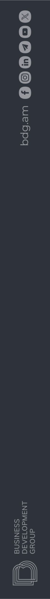

Lesson 03 / Variables, Data Types & Operators
bottles_ready = 8A name lets us use this value again.
Today: a script that calculates from a person’s input.
Retrieve / 8 minutes
print("3 + 4")
print(3 + 4)Then find evidence of a recorded revision in your own Git repository.
Worked example / W1
bottles_ready = 8 spare_bottles = 2 total_bottles = bottles_ready + spare_bottles bottles_ready = 12
After the final line
Predict the stored total. Run its calculation again to store 14. = assigns a value now.
Naming / W1
spare_bottlesWords joined with underscores: snake_case2bottlesA name cannot start with a digit.spare bottlesSpaces do not belong inside a name.bottles ≠ BottlesDifferent case means different names.Letters, digits and underscores are allowed; do not use Python keywords. More examples in W1.
Guided modification / 10 minutes
Rename clearly, change the ready-chair count, then decide where the total must be recalculated.
Full instructions and checks beside your code. Predict before each run.
Values / W2
type(value) reports its type. Choose by what the value means and how it will be used.
Prediction / W2
Two strings: join the text.
Two numbers: add the quantities.
Predict both before advancing. Python does not convert the parcel label for us.
Conversion / W2
Text digits become a count.
Remove the fractional part.
This is truncation, not rounding.
Nonempty text. The word’s meaning is not interpreted.
For today’s values: zero and empty text become False.
W2 also demonstrates float("2.75") and str(20). Then practice B · 8 minutes.
Worked example / W3
input(...)strAsk → receive text → convert → use the number.
Switch to W3 / demo/route.py. Try 1.5 and 2.25; then change both inputs.
Pause
Save your work. Return ready to investigate an input error.
Resume at lesson minute 70.
Debug / 12 minutes
Read the final error line. Identify the two value types before changing the code.
Try both supplied numeric entries after the repair. Invalid input is observed, not handled with try/except.
Worked example / W4
Predict the three results. They answer different questions; use the one the problem needs.
Worked example / W4
Three rows, three places in each row.
Three squared: the same square count.
W4 also calculates remaining chairs with subtraction. Then D · reserve a display before packing · 8 minutes.
Worked example / W5
budget = 3030budget += 1040budget -= 436budget *= 272budget /= 324.0budget += 10 means budget = budget + 10. Each line uses the current value.
Prediction / W5
Reading sessions: 20 minutes and 40 minutes.
Only 40 is divided first.
The sum is divided.
Predict before revealing. Powers, then multiply/divide, then add/subtract. Parentheses group the intended work.
Repair and modify / 8 minutes
A program can run without calculating the quantity its label promises.
Explain your repair. After the times change, decide whether the stored mean is still current.
Independent build / 18 minutes
Read a count, a unit price and a payment.
Plan first. Choose types. Check both example purchases. Full brief beside the coding area.
Exit check / 4 minutes
Show your own work. A successful run and a correct calculation are separate checks.
Homework 1 / After this lesson
A new situation: some costs belong to the group; food belongs to each traveler on each day.
Estimated work: 45–60 minutes.
Due the following Saturday; confirm the date, time and submission channel.
Submit the exact commit URL. Predict before testing; record both prediction and observation.